历史教材（1.0.6）：旧 API 和 VC6 步骤仅供参考，当前开发请阅读新版教程与构建指南。 Current guide
第三章 单重继承
制造一辆小汽车（car）。 （下载源代码）

1. vehicle 有重量（weight）属性；
2. car 继承 vehicle 的重量（weight）属性；
3. car 有自己的最大负载量（max_load）和最大速度（max_velocity）属性。
为什么不把 car 的两个属性放到 vehicle 里呢？这个问题先保留，学了下一章后大家就会明白的。
Step 1: 在 E:\OIC_Workroom\mo 目录下用 oicc 创建名为 Factory 的 MO 类型节点。

Step 2: 在 Factory 里创建名为 vehicle 的 GO 类型节点。
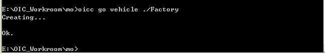
Step 3: 在 Factory 里创建名为 car 的 GO 类型节点。
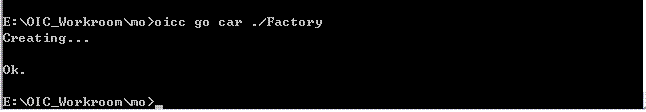
Step 4: 同样，在 E:\OIC_Workroom\mo\Factory 目录下也建 oioic 目录并把 oioic.h 和 oioic.c 文件拷贝到这个目录下。
Step 5: 创建 Factory 的 VC 工程，并把 oioic、se、so 目录映射到工程中。（参考 HelloWorld 示例）
Step 6: 按照 ho.h 文件里的 OID 定义模板格式定义需要的 OID。

Step 7: 按等级次序为各层目录的 .h 文件包含需要的 .h 文件。
1. 在 ho.h 文件中：#include "oioic/oioic.h"
2. 在 Factory.h 文件中：#include "ho.h"
3. 在 so.h 文件中：#include "../ho.h"
4. 在 ao.h 和 go.h 文件中：#include "../so.h"
5. 在 Main.h 文件中：#include "../ao.h"
6. 在 vehicle.h 和 car.h 文件中：#include "../go.h"
Step 8: 给 vehicle 添加重量（weight）属性。
在 vehicle.h 文件里，打开 vehicle 节点的扩展成员（EM）结构体 TAG_EM_VEHICLE 的注释，并在其内添加数据类型为 SR32 的属性成员 weight。
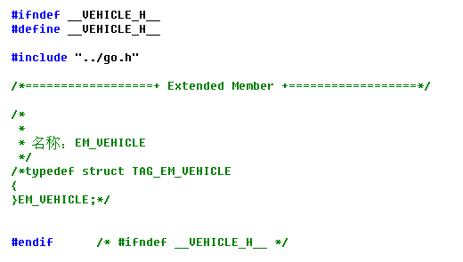
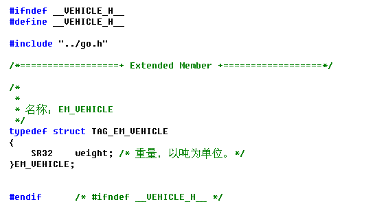
注意，不要改动 TAG_EM_VEHICLE 和 EM_VEHICLE 名，也不要把它们移到别的文件中，不然在后面构造时 oicc 就会因找不到它们而认为 vehicle 没有扩展成员。
Step 9: 给 car 添加最大负载量（max_load）和最大速度（max_velocity）属性。
在 car.h 文件里，打开 car 节点的扩展成员（EM）结构体 TAG_EM_CAR 的注释，并在其内添加数据类型为 SR32 的属性成员 max_load 和 max_velocity。
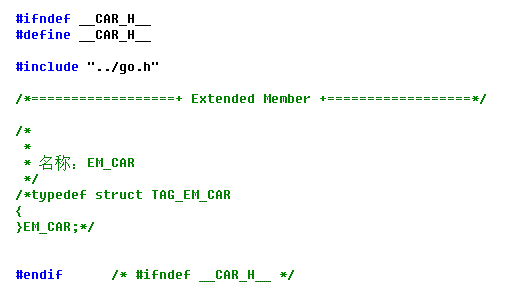
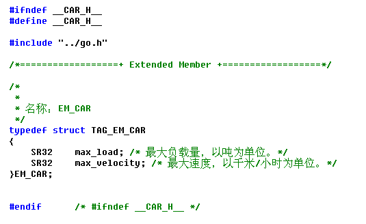
Step 10: 确定 car 的 IBN（直接基节点）。
找到 car.c 文件里的 “OICC label”。

节点的 IBN 都在自己的 <ibn> 标签体（“/*<ibn>” 和 “</ibn>*/” 之间）里指定，如上图，car 的 IBN 是 OIOIC。节点的 <crt> 标签体（“/*<crt>*/” 和 “/*</crt>*/” 之间）是这个节点的 CRT 函数生成的地方，如果这个节点不被构造，这个标签体是空的，如果这个节点被构造，oicc 就会在这个标签体里实现这个节点的 CRT 函数。
把 car 的 IBN 指为 “vehicle”。

Step 11: 指明构造 car 节点。
找到 ho.c 文件里的 __CreateObject__ 函数。

在 __CreateObject__ 函数里加上下面内容。
1. 在函数开始处外部声明 car 的 CRT 函数。
复制函数开始处的 “/* extern FRESULT CRT_xxx(OBJID* pOID, BYTKTY IQCty, BYTKTY OQCty, SI32 NumCR, OBJECT** ppObj, BYTE*
pExotic); */” 的注释内容，粘贴到该注释的下一行，然后把 “xxx” 改为 “car”。
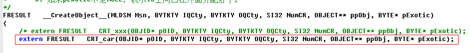
2. 如下所示，在函数的 switch 语句里加上 car 的 CRT 函数调用。
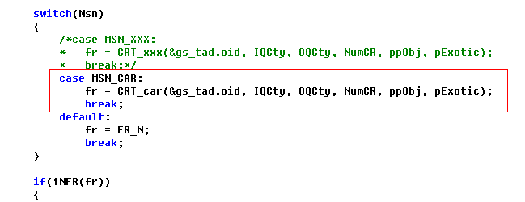
Step 12: 用 oicc 构造 Factory。

如果 car.c 文件在工程中是被打开的，就会提示 car.c 文件已被外面编辑器更新，并询问是否重新加载此文件。按“是”加载。
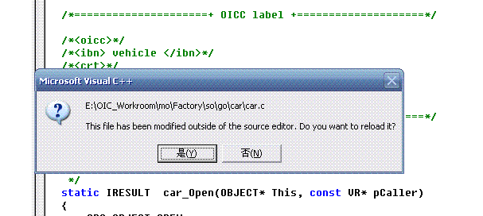
再看 car.c 文件里的 “OICC label” 部分，原来 <crt> 标签体是空的，现在有 car 的 CRT 函数了。

注意！不要在节点的 CRT 函数里写你的东西，否则再构造时 oicc 会将其删掉。
编译一下，有警告和错误：

在 car.c 文件里包含必要的头文件和向前声明 car 的 TOG 函数。
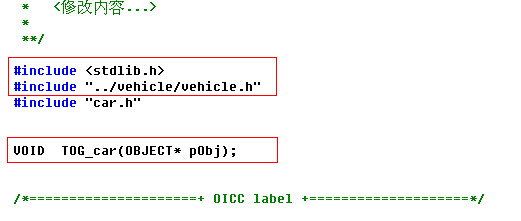
再编译，还剩4个错误，是 vehicle 和 car 的 MSN 还没定义。

找到 ho.h 文件里的 MSN 定义模板。

按照 MSN 定义模板定义 vehicle 和 car 的 MSN。

编译，OK。
Step 13: 初始化 car 的三个属性值。
找到 car.c 文件里的 car_Open 接口。
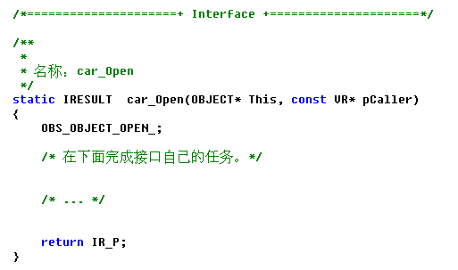
添加如下代码，初始化 car 的三个属性值，数值就随便写了。

Step 14: 定义 vehicle 和 car 的 AC1 类型的交互行为，并在注释里写明行为的功用及 TSO（输出流类型）。
找到 ho.h 文件的“Action”。
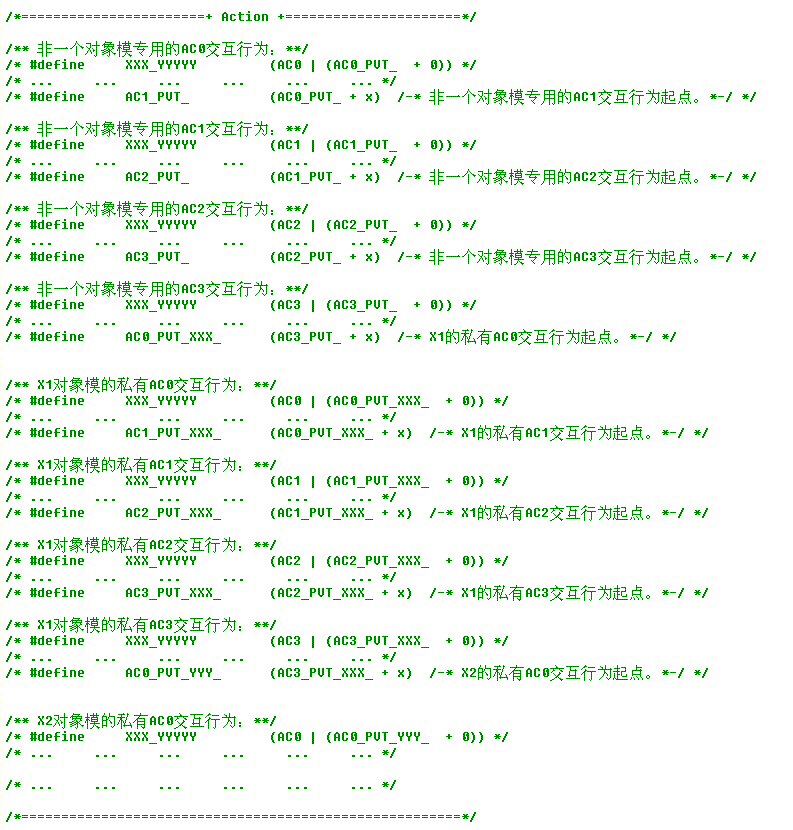
定义非一个对象模专用的 GET_MAXLOAD 和 GET_MAXVELOCITY 交互行为，并在注释里注明 car 使用这两个行为。定义 vehicle 的 GET_WEIGHT 交互行为。定义需要的交互行为起点。
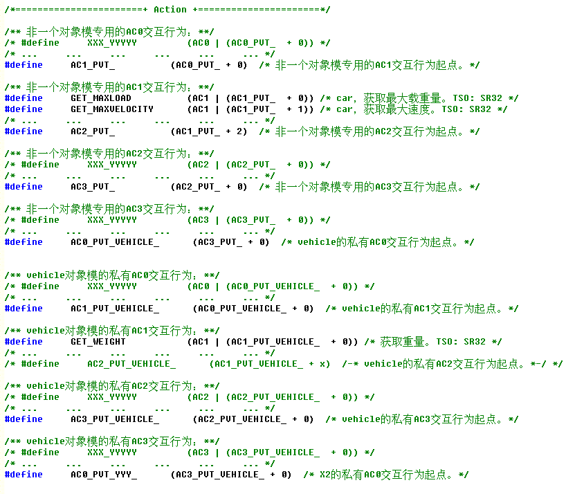
既然 car 自己使用 GET_MAXLOAD 和 GET_MAXVELOCITY 两个行为，为什么不把它们定义成 car 的私有行为？这个问题也保留，等学了下一章后大家就明白了。
Step 15: 实现 vehicle 和 car 的交互行为。
在 vehicle.c 文件里找到 vehicle_Interact1 接口。

在 vehicle 的 vehicle_Interact1 接口里实现它的 GET_WEIGHT 行为。

在 car.c 文件里找到 car_Interact1 接口。

在 car 的 car_Interact1 接口里实现它的 GET_MAXLOAD 和 GET_MAXVELOCITY 行为。

Step 16: 编写输出 car 属性值的代码。
1. 找到 ho.c 文件里的 “Global object pointer(s)”。

2. 定义 car 对象指针 g_pCar。

3. 在 Main.c 文件里外部声明 g_pCar。
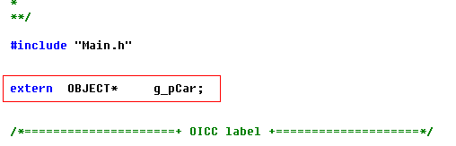
下面 4 ~ 7 的代码写在 Main.c 文件的 Main 函数里。
4. 定义变量并初始化 caller 变量。

5. 添加用 CreateObject 宏动态创建 car 对象及打开 car 对象的代码。

6. 添加输出 car 对象的属性值的代码。

7. 添加关闭并销毁 car 对象的代码。

Step 17: 在 car 的 Close 接口里判断引用计数是否为 0。
在 car.c 文件找到 car_Close 接口并添加代码。

Step 18: 执行程序。

版权©2005-2009 赵平智。保留所有权利。